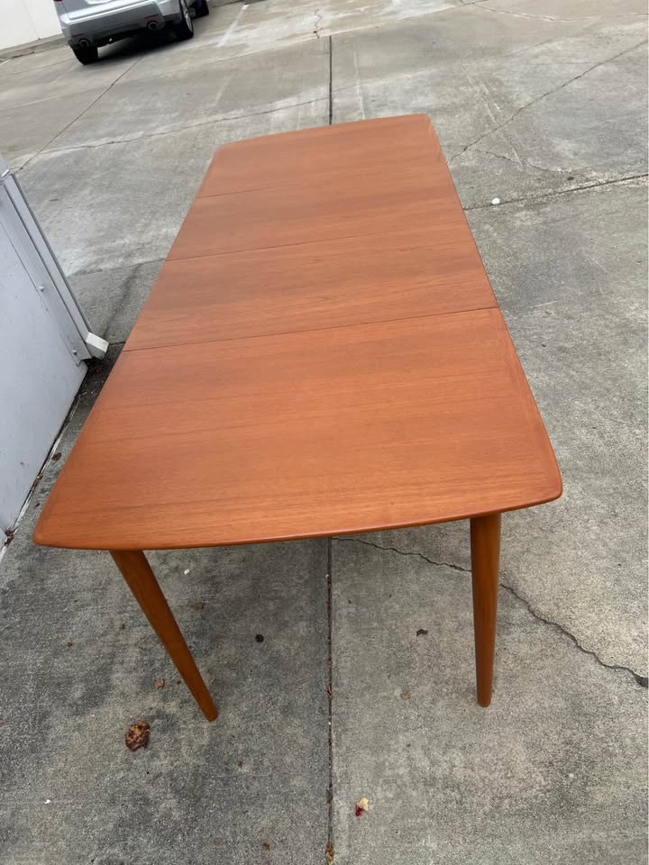
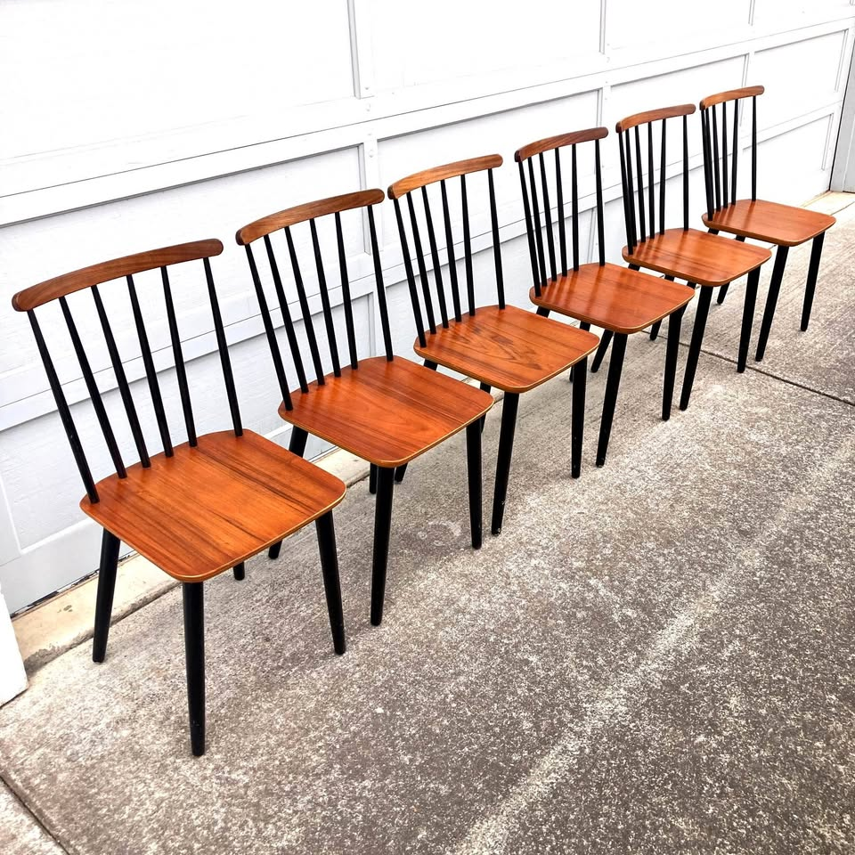

461 Anderson — Dining Table Watch
Mid-century modern · compact when closed, long when open — ~4 people day to day, 8 for guests · Danish teak/walnut preferred · leaves must blend in colour with the top · driveable from the Bay Area
Updated Thursday, September 10, 2026 · morning pass · RE-RANKED on closed length · NEW: San Leandro 51″→90″New ranking rule (set Sep 9): shorter closed is better. Ideal ~51″ closed, ~54″ fine — the 50–54″ sweet spot ranks highest. Extended ≥84″ is the floor, 87″+ preferred. A compact table that opens to 90″ now beats a long-closed table that opens to 117″.
⚡ Look at right away
- 🌟 NEW #1 — San Leandro $1,700: 51″→90″. This is the exact closed length you asked for, opening 6″ past the 84″ floor. Just refinished, four round tapered legs, and in the extended photo the leaves match the top — the one thing almost nothing else here gets right. Listing video reviewed. ⚠ Seller says only “looks like teak” and names no maker — ask what the wood is and check the underside for a stamp. FB listing.
- 📈 Emeryville is now a different listing — and a much better one. Same 54″→94″ table, re-posted with four chairs at $950, down from $1,250 — and finally photographed assembled, in direct sun. That was this card’s one standing objection and it is gone. Top reads clean and even. New FB listing.
- 🪑 Chairs breakthrough — San Rafael, six genuinely Danish chairs, $1,200 (was $2,400), free Bay Area delivery. Thomas Harlev for Farstrup Møbelfabrik, Made in Denmark, like-new, legs unscrew for transport. First real Danish workshop set of six this search has found. See the Chairs tab.
- 🔄 The board has been re-ranked, and two long tables dropped hard. eBay $750 (72″→114″) and Berkeley Hornslet $800 (62.5″→117″) were #1 and #2 yesterday on maximum extension. Under the closed-length rule they are the two longest-when-closed tables here and now sit at the bottom of the keepers. Both are still live, still good tables — but 72″ closed is a permanent 21″ of everyday room you do not get back.
- ⚠ San Rafael Ansager $800 — demote now stands. CL re-opened this morning: updated 2 days ago, 13 days live, extended length still not stated. Past the ~7-day rule, so it stays off the main board until the seller answers.
- 📝 This pass (Thu Sep 10 ~9:00a PT): Craigslist (3 queries) + Facebook Marketplace (3 queries + maker search) + Facebook post/group search + EstateSales.net + eBay local pickup. Ruled out new: SF square teak $1,250 (67″ only), Gudme Møbelfabrik / Niels Otto Møller $1,850 Aptos (priority maker, but star pedestal — photo-confirmed), Drexel Declaration $1,750 (American). eBay local-pickup: 19 hits, all over budget or 60+ miles. Estate sales: 23 in 15 days, none advertising Danish/MCM — Friday’s evening runs should re-preview the Fri/Sat sales once photos post.
Table alone ≤$2,000 · closed 50–54″ preferred (ideal ~51″) · extended ≥84″, 87″+ better · Danish teak/walnut/rosewood · four legs (no pedestal/trestle) · matching-wood leaves that blend in colour
Tables · sweet-spot closed (50–54″) — the new top of the board

Mid-Century Modern Extendable Dining Table — just refinished
The first table this search has found that hits your stated ideal closed length exactly: 51″ closed, two 19½″ leaves, 90″ fully open. Compact enough that four people are not eating at a banquet table on a Tuesday, and 6″ past the floor with guests. It is also the only table here whose leaves genuinely match the top — and it has already been refinished, so there is no project. Held to four stars by price and provenance, not by the table.
✔ Surface: refinished, and the leaves blend. Downloaded the extended photo at full resolution and looked at the seams. Both leaves are in, and the tone carries straight across — no pale centre, no darker ends, no milky haze. There is normal board-to-board figure and nothing more. Against the rest of this board, where nearly every card carries a leaf-colour caveat, this one has nothing to fix.

Danish Modern Teak Draw-Leaf by Ansager Møbler
Under the new rule this is the table the board has been undervaluing. 53″ closed → 93″ open is a near-perfect fit for the brief, it is a stamped priority Danish maker, the top has already been professionally refinished to like-new, and it costs $950. Re-opened on Craigslist this morning: live, renewed Sep 8, running to Oct 5.
⚠ Surface: the best top here — and the one leaf mismatch a refinish already failed to fix. On scratches nothing on this board is close: fully refinished, hand-rubbed oil, graded like-new, zero work. But the seller still writes that the two stored leaves have “a slightly different hue from being stored away.” That survived a professional refinish, so treat it as permanent rather than a $300–600 fix. It is the one card where the photos genuinely cannot settle it — go and look at it with the leaves out.

Vintage Danish Teak MCM Dining Set — table + 4 chairs
The single biggest change on the board this run. This is the same Emeryville table that has sat at the bottom of the page for six weeks with one objection against it — never photographed assembled — and the seller has now re-posted it set up, in direct sun, with four chairs, at $950 instead of $1,250. The objection is gone, the price is down, and the closed length turns out to be right in the sweet spot.
✔ Surface: finally photographed, and it holds up in raking sun. Downloaded the new hero at full resolution. Shot in direct sunlight — the same conditions that exposed the haze and scratch field on the Hayward $800 — this top reads even, warm and clean: consistent honey teak across all boards, crisp edge banding, no milky clouding, no scratch field. Shown closed, so the leaves are still untested for colour; that is the one thing left to check, and it is a phone call.

Vintage Danish Modern Teak Extension Table
On the numbers this is the best value on the page: Made in Denmark, 53″→93″ — the same closed-and-open profile as the $950 Ansager — four legs, for $600. The only reason it is not higher is the top, and the reason the top matters is that it cannot be safely fixed.
⚠ Surface: repair not confident — a worn veneer top. Zoomed in, the centre panel is blotchy, cloudy and dull, with pale patches and a failing finish, while the pulled leaf beside it is clean and crisp — so the “match” is really the top having faded down to the leaf, not the two ageing together. And the listing says “solid teak and teak veneer”: that centre field is a veneered panel inside solid banding, and sanding an already-worn veneer risks burning through it. That is the line between a $400 refinish and a ruined tabletop.

Vintage Danish Extendable Dining Table
A Made-in-Denmark table at 53″→92″ with the arithmetic spelled out, four square legs, underside stamp photographed, and table-only at $800. Everything about the numbers is right. The top is the problem, and it is a veneer, so the fix is limited.
⚠ Surface: a scuff-and-recoat project, not a wipe-down. The seller’s photos are shot in direct sun — effectively raking light — and the top shows a dense field of fine white scratch lines across both the leaf and the centre panel, far more than “a few,” plus a milky haze. That haze is worn original lacquer, not dry oil, and oil will not penetrate it. The honest fix is a scuff-and-recoat (~$150–300, or a careful weekend), which is veneer-safe because it never reaches bare wood — but it may not lift the deepest lines, and a full strip is not advisable: the edge banding and ply line along the rim confirm a veneered top. Leaf colour also softens in the sun: in the hero the leaves match, in raking light both read lighter than the centre.

Mid Century Draw-Leaf Dining Table — Danish Teak
The most compact table here when closed — 48⅓″, even tighter than your ~51″ ideal — and it still reaches 87″, which is the comfortable-eight mark rather than a tight one. All for $550, the cheapest table-only pick on the page. Two things hold it at four stars, and both are answerable with photographs.
❓ Surface: leaves blend — but “fair” is graded and never photographed. The extended photo shows both leaves matching the top well. But the listing grades it “Used – Fair — some scratches and scuff marks,” and the only photo is shot from across the room at an angle that would hide every one of them. “Fair” is the weakest grade on this page. Ask @walnutcreekmodern for close, raking-light photos of the top before driving.
Tables · long when closed — still good, but they cost you everyday room
Why these dropped. Every table below extends further than anything above it. Under the old “longest wins” ranking, two of them led the board. The brief is now four people day to day, so a table that is already 57–72″ when closed is carrying guest-sized length around the room all week. They stay on the board because they are live, verified and well within budget — but the compact tables above are the better fit.

Skovby Walnut Extendable Dining Table + 6 Chairs
A Skovby — priority Danish maker — at 55″→102½″, on four clean square tapered legs, plus six chairs, for $1,600. At 55″ closed it is only an inch outside the sweet spot, which keeps it the highest-ranked of the long-closed group. Two photographs would settle whether it belongs at the top of the page or the bottom.
❓ Surface: unknown, and there is a veneer flag. Every photo shows the table closed, so the leaf colour is untested — and on a pull-out of this design the sections live under the top and are the likeliest here to have stayed pale. The condition note is a soft “wear consistent with age.” Compounding it, the listing says “walnut-toned wood” rather than solid walnut, which usually means veneer — and veneer is what makes scratches unrepairable. Ask PlaceMakers for one photo fully extended and one close-up of the top.

Midcentury Danish Teak Draw-Leaf Table + 6 Chairs
The most complete room on the board and the cleanest top of any pick — 57″→96″ on four tapered legs with six matching Benny Linden chairs in stain-free cream fabric, no recovering project. It led the board a week ago. It falls here because 57″ closed is guest-sized on a Tuesday and because “+ Tax” takes it to ~$2,050, over the ceiling.
✔ Surface: clean and even; leaves blend. Zoomed in, this is the glossiest, most even top of any pick — figured grain, no clouding, no visible scratch field. Both leaves are out in the photo and carry the tone across. Nothing to refinish. The reservations here are money and closed length, not surface.

Danish Control Mid-Century Modern Teak Extendable Dining Table
On provenance this is still the strongest card here — a photographed “Furnituremakers Danish Control” medallion, solid teak, four round tapered legs, $850. It was #2 on the old board on the strength of 106″. Under the closed-length rule, 59″ closed is what moves it down: it is 8″ longer than San Leandro every single day, to buy 16″ you use a few times a year.
⚠ Surface: pale leaves + patina on the middle board — one refinish, ~$300–600. Two issues, one fix. The leaves are plainly lighter than the darkened top, and the seller notes patina on the middle board. Because this is solid teak, a full refinish — sanding top and leaves together, then re-oiling — addresses both at once with no risk of burning through a veneer. That is the difference between this card and the veneered ones.

Hornslet Møbelfabrik MCM Extending Dining Table
A genuine Hornslet Møbelfabrik, Made in Denmark, reaching 117″ — the longest table this search has ever verified — for $800. It was #2 on yesterday’s board. It is still a very good table at a very good price; it is simply the second-longest closed table here at 62.5″, which is 11½″ past your ideal.
⚠ Surface: top wear, leaves richer than the centre — one refinish, ~$300–600. The seller is frank that the top shows wear, and the photos confirm a duller, blotchier centre field while the pulled leaves keep a deeper honey tone — the usual light-exposure split on a draw-leaf. Hornslet factory teak is the confident sand-and-re-oil lane.

Teak Draw-Leaf Dining Table, Danish, circa 1960
Cheapest per inch by a wide margin, Denmark stated as country of origin, free local pickup, and Best Offer enabled — it was the board’s #1 yesterday on 114″. But at 72″ closed it is the longest-when-closed table here by nearly ten inches, and 72″ is longer closed than several picks are open enough for six. Against a brief of four people day to day, that is the wrong shape at any price.
⚠ Surface: leaves read close, one edge ding, tone darker than most teak here. In the extended shot both draw-leaves carry the same reddish-brown tone as the centre — closer than Los Altos. The disclosed flaws are specific rather than vague: a chip on the edge and a couple of stains, both photographed. Solid teak, so both are a normal sand-and-re-oil; edge damage is the one thing that can need a filler. The top also photographs noticeably darker than the honey teak elsewhere — ask whether it has been stained.
Tables · amber — pending, demoted

Ansager Møbler Danish Teak Extendable Dining Table
A labelled and stamped Ansager Møbler — priority Danish maker — for $800, photographed fully open on four square tapered legs. It would be a five if the listing said how long it gets. It doesn’t, and now it has been thirteen days.
⚠ Surface: pale leaves + “typical surface wear” — one refinish, ~$300–600. The driveway photo shows it fully open with the right-hand leaf clearly paler than the centre. Solid teak, so the fix is safe and $800 absorbs it. The unresolved problem is not the finish.
How they compare in one line each — closed length first now:
San Leandro $1,700 — 51→90, your ideal closed length, refinished, leaves match. Wood and maker unstated.
SF Ansager $950 — 53→93, stamped priority maker, flawless refinished top; leaf hue mismatch is permanent.
Emeryville $950 +4 chairs — 54→94, now photographed assembled, widest top at 40″, $300 cheaper than last week.
San Rafael $600 — 53→93, Made in Denmark, best price; worn veneer, not confidently repairable.
Hayward $800 — 53→92, Denmark stamp photographed; veneered and hazy, +tax ~$886.
Walnut Creek $550 — 48⅓→87, most compact and cheapest; “fair” never photographed, only 32¼″ deep.
Redwood City Skovby $1,600 +6 — 55→102½, priority maker; shown only closed, “walnut-toned” hints veneer.
Hayward $1,850 +6 — 57→96, cleanest top and six clean chairs; +tax breaches the ceiling.
Los Altos $850 — 59→106, best provenance and the one confident refinish; long closed.
Berkeley Hornslet $800 — 62.5→117, named Danish maker, longest ever verified; long closed.
eBay $750 — 72→114, cheapest per inch, free pickup; 72″ closed is the wrong shape for four.
San Rafael Ansager $800 — amber, 13 days, length still unstated.
The lesson of this run: the ranking changed, the tables didn’t. Yesterday’s top two were chosen for reaching 114″ and 117″. Today’s top three are chosen for closing to 51″, 53″ and 54″. Nothing was discovered to be wrong with the eBay or Hornslet tables — both are live, both are Danish, both are cheap. What changed is that extension is a few evenings a year and closed length is every other night, and a draw-leaf table only gets to optimise one of them. Worth noticing that the sweet-spot group still reaches 90–94″ — you are giving up almost nothing at the top end to gain 10–20″ of everyday room.
Gone in the last 30 days
Palo Alto MCM teak + 6 chairs, $580 (Palo Alto) — removed Sep 8. Not sold: pulled as fake / no-reply after Ray emailed and got no answer. It was #1 for two days. Standing ban — do not re-promote if it resurfaces.
Made-in-Denmark draw-leaf, $1,200 (Petaluma) — gone mid-August, three days after posting. 90.5″ extended, four tapered legs, photographed extended. The template for the tier-A rule: dimensioned, Danish, under $1,300, and it cleared in under a week.
Ansager Møbler XL, $1,700 (SF Mission) — deleted by its author in late August. 112″ × 48″, the largest table this search ever found. Same seller as the current SF Ansager $950.
Skovby cherry oval, $1,200 (Oakland) — marked out of stock in late August. 110″ extended, priority maker.
Set of 8 Danish teak chairs, free delivery, $1,600 (San Rafael) — sold. The only set of eight this search has seen.
Set of 8 D-Scan teak chairs, $1,000 (Richmond) — sold.
Set of 6 Danish-style teak by Sun Furniture, $750 (Berkeley) — sold.
Six Danish Modern teak, reupholstered purple, $1,000 (SF) — deleted.
Pattern to keep in mind: everything here that was Danish, dimensioned and under $1,300 was gone inside a week. Nothing in that description is currently on the board — the Hornslet at $800 and San Rafael at $600 are the closest, and both have stayed because their tops need work.
Ruled out this pass: Vintage Danish Teak Square Dining Table $1,250 (SF, Stuff by Luxe, just listed) — 35½″→67″ only; DQ on extended length. Gudme Møbelfabrik extendable by Niels Otto Møller $1,850 (Aptos) — priority maker and a Danish Furnituremakers’ Control mark, teak, like-new, leaves stated to match — but the base is a splayed star pedestal, photo-confirmed this run. Hard DQ. Flagged here in case you ever want to open a round/pedestal exception lane, because on every other axis it is excellent. Drexel Declaration walnut $1,750 (San Rafael, just listed) — American maker. eBay local pickup: 19 results with the filter on — all either over $2,400, freight-only, or 60+ miles out. Facebook post/group search: the only Danish extendables surfacing were Los Angeles and Puyallup WA, plus a 67″ unit. EstateSales.net: 23 sales within 30 miles over the next 15 days, none advertising Danish, teak or MCM dining furniture in their titles.
Standing ruled-out (unchanged): Stanley $750 SF (American). Novato $1,750 (pedestal/trestle). BRDR Furbo $800 SF and Gangsø $850 (length unstated; historic DQ at 59″ and ~63″). Richmond $915 (no dimensions after weeks). Dyrlund $1,700 Hayward (ceramic-tile inlay + trestle). Meredew, McIntosh, Nathan, Remploy, G-Plan and other UK imports. E. Valentinsen $1,175 and Gudme rosewood $700 (twin-pedestal). Gudme $550 Santa Rosa and John Keal $975 (round on a pedestal). Vejle Stole $1,995 SF (priority maker, only 76″). Sonoma Skovby $800 (twin pedestal, peeling veneer). Ansager square draw-leaf $650 Walnut Creek (67″). SF pull-out-leaf $1,695 (83″). Millbrae $799 (arched trestle). Los Gatos $1,000 (78″). Albany $1,000 (67″). Alameda $1,250 (72″ max, laminate). Fremont $450 (made in Singapore). El Cerrito $1,150 (two gate-leg tables). Roseville, Modesto, Sacramento and Stockton listings (outside the drive radius or no dimensions). Castlery, West Elm, Crate & Barrel (current retail). Heywood-Wakefield $895 (American).
Watchlist (soft tier, $2,001–$2,300, priority makers only): the Gudme Møbelfabrik walnut expandable, $2,050 (Folsom — 63¼″→101½″, original table pads, delivery included) remains outside the Marketplace radius and the SF Bay Craigslist region and still cannot be re-verified from here. Its listing ran to roughly Sep 11, so it may already be gone — and at 63¼″ closed it now fails the ranking rule as well as the ceiling. Treat it as closed. Nothing new entered the soft tier this run.
⚡ Chairs — quick read
- 🪑 NEW #1 — San Rafael, six chairs, $1,200 (was $2,400), free Bay Area delivery. Thomas Harlev for Farstrup Møbelfabrik, Made in Denmark — the first genuinely Danish-workshop set of six this search has found. Condition graded like new, legs unscrew for transport, delivery is free. $200 a chair.
- 🌟 Sausalito’s seven Benny Linden at $250 still stands — ~$36 a chair, still the best price per seat by a factor of five, still the only set above six. Danish in style only.
- 🟩 SF $900 set of six — upholstery already done, no maker named, $150 a chair. The middle option.
- 🏆 Tables that include seating: Hayward $1,850 (+6 clean Benny Linden), Redwood City Skovby $1,600 (+6, stained), and now Emeryville $950 (+4).
- 💭 Still no standalone set of eight. Seven-plus-one, or six Danish plus the Emeryville four, remain the realistic routes.
Budget $1,200–$2,400 for six · MCM teak/walnut that coordinates with the table · easy, clean fabric · driveable / delivers
Chairs · sets of 6+ · in budget

Set of 6 Danish Teak Dining Chairs — Thomas Harlev for Farstrup Møbelfabrik
The chairs problem may have just been solved. Six matching Made-in-Denmark chairs by a named designer and a named factory, graded like new, half price, and delivered free anywhere in the Bay Area. Every other set of six on this board has been Danish-style; this is the real thing, and it is inside budget.

Set of 6 Vintage Mid-Century Modern Dining Chairs — Scandinavian/Danish Style
Six matching chairs with the reupholstery already done and paid for, at $150 a seat. Cheaper than the Danish set and dearer than Sausalito — the middle option, and the compromise is provenance: no maker is named anywhere.

7 Benny Linden Teak Dining Chairs — Set of 7
Seven teak chairs for $250 — ~$36 a chair — with tall sculptural spindle backs, tapered legs and plain cushioned seats. Still the cheapest seating this search has found by a factor of four, and still the only set above six. It stays a five on value; it simply is not a Danish workshop.
Chairs · partial sets worth a look

Four Danish Modern Teak Dining Chairs
Solid old-growth teak, cleaned, oiled and newly reupholstered in green wool — like-new, nothing to do. Four stars’ worth of quality at a three-star count: four chairs do not furnish a table that seats eight.
The trade-off in one line: the new San Rafael six at $1,200 is the first set on this board that is actually Danish, actually six, actually like-new and actually delivered — it is the one to call. Sausalito’s seven at $250 remains the value play and the sensible fallback. SF $900 sits between them with no maker. Everything else means buying a table that comes with chairs: Hayward $1,850 (+6 clean), Redwood City Skovby $1,600 (+6 stained), Emeryville $950 (+4).
Seen but set aside: Mid-1960s D-Scan teak, 3 chairs ($300, Novato) — only three, fair, Singapore-made. Set of 4 Danish Teak Windsor-style ($275) — four only, and Windsor rather than Danish-modern. Set of 6 by Sun Furniture ($750, Berkeley) — sold. Six Danish Modern teak, reupholstered purple ($1,000, SF) — deleted. Four Henning Kjærnulf for Vejle Stole Møbelfabrik ($900, Richmond) — priority maker, but only four at $225 each. Set of 8 D-Scan teak ($1,000, Richmond) — sold. Four D-Scan teak ($600, Santa Rosa) — gone. Set of 8 Danish teak, free delivery ($1,600, San Rafael) — sold. Set of 6 D-Scan teak ($1,200, Novato) — pricier per chair and not Danish-made. Six H.W. Klein for Bramin ($2,795, Richmond), Johannes Andersen teak 6 ($2,650), six vintage MCM Danish teak ($1,700, SF) — over the ceiling or over $250 a chair. Nathan teak 6 ($1,280, SF) — UK import. Sunnyvale MCM arm chairs ($400) — grey tweed, not teak-toned. Floral-upholstered 6 ($2,400) — busy fabric.